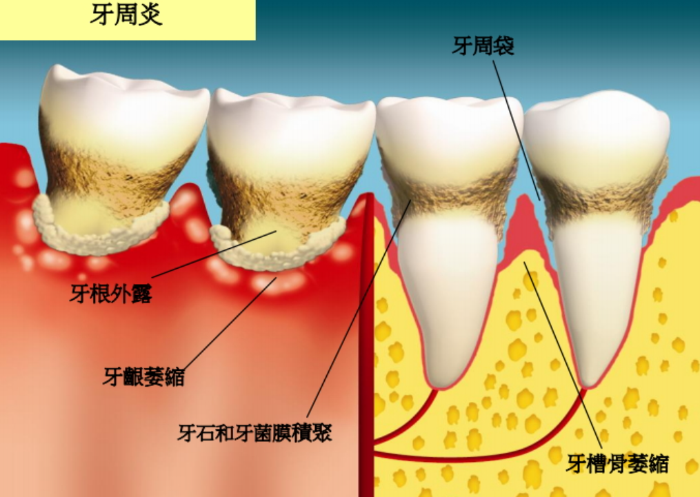

牙周病的症状
牙周病，其实就是牙齿周围的“地基”（即牙齿周围的骨头）出了问题，就像房子的地基松了，房子就会摇晃，牙齿也一样。它的主要症状有以下几个：
牙龈出血：刷牙或咬东西时，牙龈容易出血，像是碰了一下就破了。这说明牙龈已经发炎，血管变得脆弱。
口臭：早上起床或者平时讲话时，口腔总是有一股难闻的味道，刷牙后也很快又出现。这可能是细菌在牙龈里“作怪”了。
牙龈肿胀、颜色变深：健康的牙龈是粉红色的，但如果发炎了，就会变红甚至发紫，摸上去可能还会肿胀、酸痛。
牙缝变大：牙龈萎缩后，牙齿之间的缝隙会变大，吃东西时容易塞牙，这就像围墙倒了，露出了更大的空隙。
牙齿松动、变长：牙龈和牙槽骨被破坏后，牙齿的“根”就露出来了，看起来比以前长了，而且可能会摇晃，甚至严重时会掉落。
这些症状看起来可能不严重，但如果不及时处理，牙齿就像房子地基塌了一样，最终可能撑不住。但如果早发现、早治疗，仍然有机会维持症状不加重